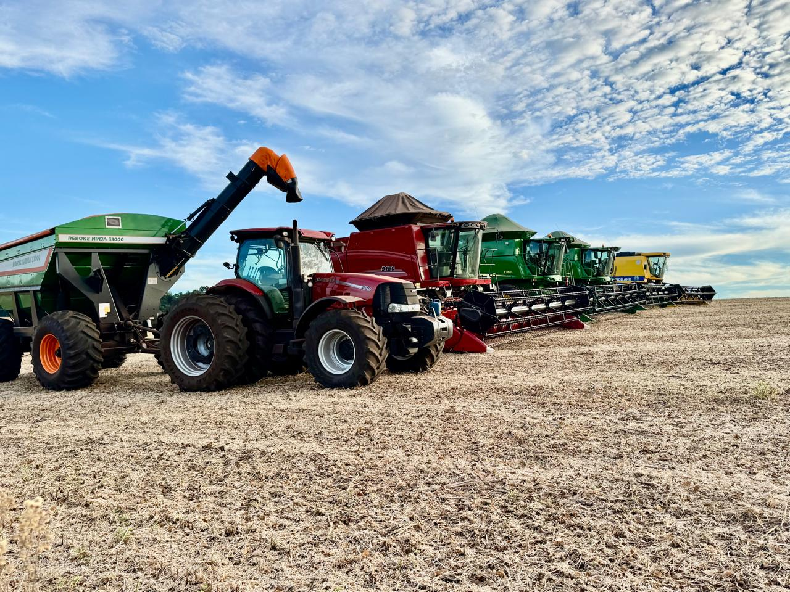
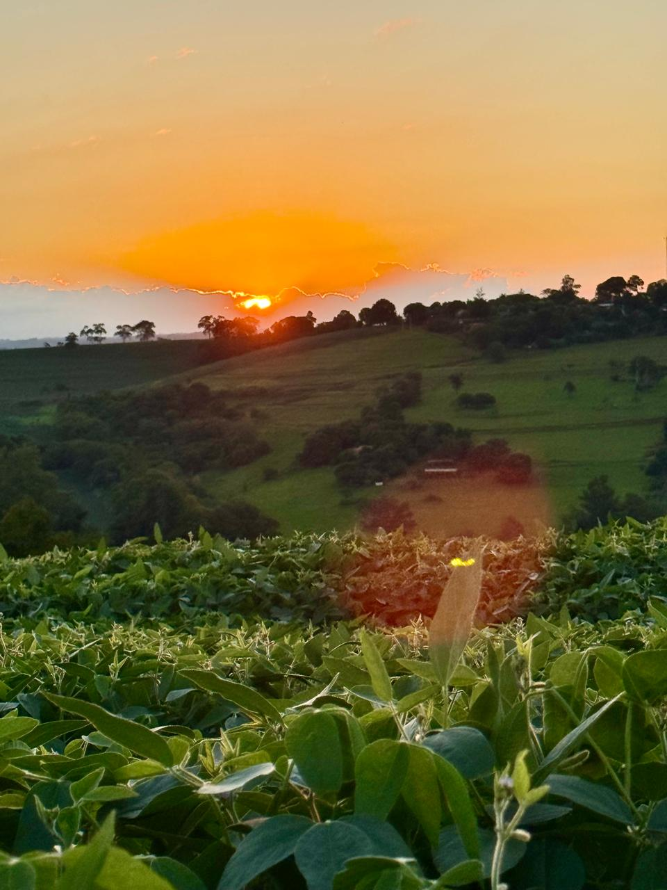
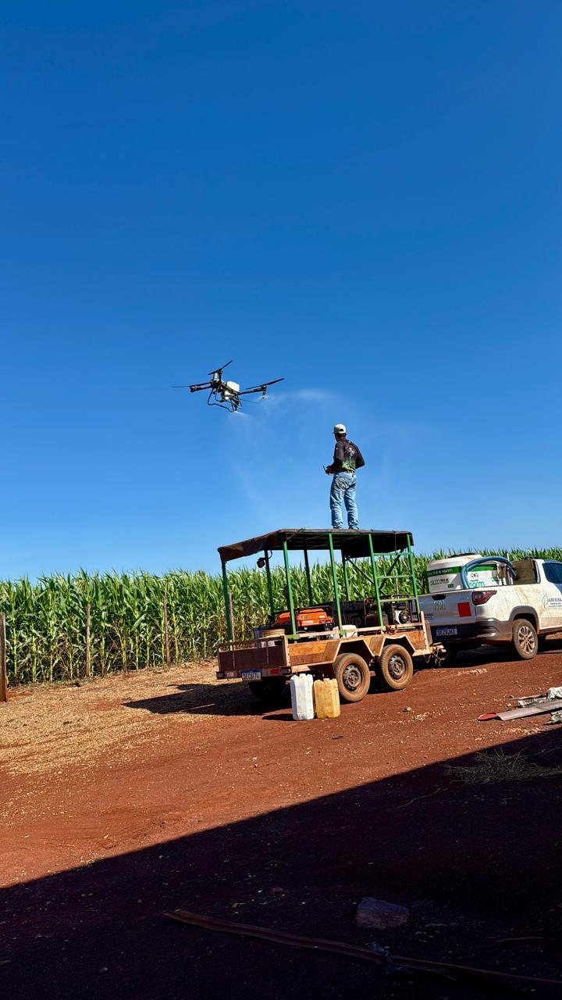
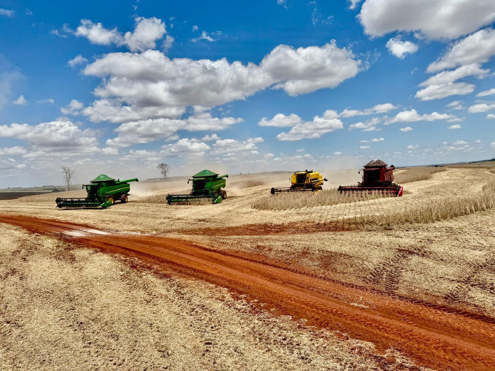

Agro Forte, Futuro Sustentável
Equilíbrio entre Produção, Tecnologia e Preservação Ambiental
O Agro Brasileiro Alimenta o Mundo e Preserva o Futuro
O agronegócio brasileiro é um dos setores mais importantes da economia nacional, responsável por **impulsionar o crescimento econômico**, gerar milhões de empregos e **garantir o abastecimento alimentar** de diversos países. O grande desafio atual é produzir em larga escala mantendo o respeito aos ecossistemas.
Números que Comprovam a Força do Agro
➔ **Produção de Soja:** 166,1 milhões de toneladas colhidas com alta eficiência.
➔ **Produção de Milho:** 141,7 milhões de toneladas impulsionando o mercado interno.
➔ **Total de Grãos:** 346,1 milhões de toneladas consolidando a liderança global.
➔ **Área Colhida:** 81,6 milhões de hectares otimizados por tecnologia.
Fonte: IBGE – Levantamento Sistemático da Produção Agrícola (LSPA).
A Soja: Líder da Agricultura Brasileira
A oleaginosa segue como o principal produto da pauta exportadora do país. Em 2025/2026, as práticas de **manejo biológico de pragas** reduziram drasticamente o uso de defensivos químicos químicos, gerando um grão mais limpo e valorizado internacionalmente.
- ➔ Recorde histórico de produção impulsionado por biotecnologia;
- ➔ Forte participação nas exportações e na **geração de divisas** para o país;
- ➔ Fonte essencial para a cadeia de proteína animal e produção de **biodiesel**.

Imagem tirada por Adilson De Freitas, 2026.
O Milho: Energia para o Campo e para a Economia
O milho brasileiro destaca-se pela técnica da **safrinha (segunda safra)**, que permite aproveitar a mesma área de terra no mesmo ano, evitando a abertura de novas matas e maximizando o uso do solo de forma inteligente.
- ➔ Base estratégica para a alimentação da avicultura e suinocultura nacional;
- ➔ Matéria-prima crescente para a indústria de **etanol de milho**;
- ➔ Elevada capacidade de **geração de renda** para o pequeno e médio produtor.

Imagem tirada por Adilson De Freitas, 2026.
Sustentabilidade: Produzir Mais com Menor Impacto
Entre 2012 e 2025, a produção de grãos mais que dobrou, enquanto a área plantada cresceu em ritmo muito menor. Isso prova o **ganho de produtividade verticalizado**, poupando milhões de hectares de vegetação nativa.
- ➔ **ILPF:** Integração Lavoura-Pecuária-Floresta que sequestra carbono;
- ➔ **Recuperação de Pastagens:** Transformação de solos degradados em áreas férteis;
- ➔ **Preservação Ativa:** Monitoramento rigoroso de nascentes e matas ciliares.

Imagem tirada por Adilson De Freitas, 2026.
Tecnologia: O Motor do Agro Moderno
A agricultura de precisão transformou o campo. Hoje, sensores em colheitadeiras analisam o solo em tempo real, enquanto algoritmos de inteligência artificial calculam a quantidade exata de água e nutrientes, **eliminando o desperdício**.
- ➔ **Drones de Alta Precisão:** Mapeamento de lavouras e aplicação localizada;
- ➔ **Sementes Adaptadas:** Variedades mais resistentes às mudanças climáticas;
- ➔ **Rastreabilidade Digital:** Consumidor sabe a origem exata do alimento na gôndola.

Imagem tirada por Adilson De Freitas, 2026.
O Papel do Carbono Neutro e o Futuro das Próximas Décadas
O grande marco da atualidade é o mercado de **créditos de carbono**. Fazendas brasileiras que adotam o plantio direto e mantêm florestas em pé começam a ser bonificadas financeiramente. Isso cria um ecossistema onde **preservar o meio ambiente se tornou um negócio altamente lucrativo**, unindo de vez a ecologia à economia de mercado.
O Futuro é Sustentável
Produzir com eficiência. Preservar com responsabilidade. Crescer com inovação.
Agro Forte. Futuro Sustentável.